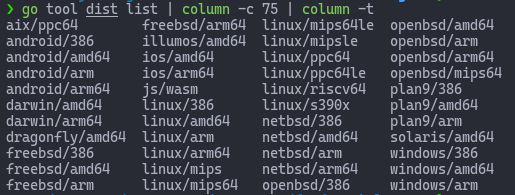

The Fundamentals of Go
Presentation by Mike
Thanks for presence
Goal is to have fun while learning Go
Presentation is a high-level overview of the language
Coding sessions will focus on the technicalities
However, feel free to ask any question you have in the chat
What is Go?
Go is an open source programming language.
It’s statically typed and produces compiled machine code binaries.
opensourced on Github (contribute, follow the project)
Co-authors
It was designed at Google by Robert Griesemer , Rob Pike , and Ken Thompson .
Robert Griesemer:
Rob Pike:
Ken Thompson:
Timeline (bird's eye)
Sep 21, 2007 - Whiteboard sketch
Nov 6, 2009 - Open Sourced
March 28, 2012 - Go 1.0
...
Apr 1, 2021 - Go 1.16.3
A Go program
package main
import "fmt"
func main() {
fmt.Println("Hello World!")
}
The first line is mandatory in Go. Go source code is grouped in packages.
The import statement allows us to use code from other libaries. In this case the std
library.
The function main denotes this is the entrypoint of our application (aka where execution
starts)
We then use the Println function from the fmt package to print the string "Hello World!"
with a newline
Who uses Go?
2376 companies reportedly use Go in their tech stacks
These are just companies who REPORTED using Go. Many uses it but do not report like the past
companies I worked with.
What makes Go so special?
You might say: This is all sweet and fine but what... why should I use Go?
I will try my best to tell you why, as those companies I listed, I chose Go my
microservices needs.
The following is not in a specific order
Why?
The computing landscape today is almost unrelated to the environment in which the languages being
used, mostly C++, Java, and Python, had been created.
Modern landscape = multicore processors, networked systems, massive computation clusters, larger
scale...
Clarity
The most important skill for a programmer is the ability to effectively communicate ideas.
Gastón Jorquera
Code is read more than it is written. As developers, we are story-tellers and novel
writters. We need to do a good job at that and if the language enables it, all the better.
We needed a language that would be easy to read and reason about.
The intention of the developer should be easily deduced by glancing at the code.
The first step towards writing maintainable code is making sure intent of the code is clear.
Simplicity
The ability to simplify means to eliminate the unnecessary so that the necessary may speak
Hans Hofmann
aka "Does it spark joy?"
We’ve all been in a situation where we say “I can’t understand this code”. We’ve all worked
on programs we were scared to make a change because we worried that it’ll break another part
of the program; a part you don’t understand and don’t know how to fix.
Clarity and simplicity are interlocking forces that lead to maintainable software.
Productivity
“I started another compilation, turned my chair around to face Robert, and started asking
pointed
questions. Before the compilation was done, we’d roped Ken in and had decided to do something.”
Rob Pike
How much time are we losing waiting for our tools or lost in a foreign codebase?
Waiting or idle time breaks the flow and makes us lose focus.
As a developer, Go allows us to quickly iterate quickly and feel productive
Example: if you execute `go run` you'd think Go is interpreting the source code, due to the
speed, but it's compiling it in fact.
Go fmt
On the same topic as productivity, we did not want to waste time of futile quarrel over
formatting
Go provides a great tool to handle that for us and everyone uses it.
As such all codebase looks and feels similar from a formatting standpoint.
Performance
Read for yourself:Server-side
I/O Performance: Node vs. PHP vs. Java vs. Go
This is a "floor is lava" topic.
Go is extremely fast. Comparing it to PHP or Node or Java is not a fair comparison (i.e
compiled vs interpreted/JIT) in
many cases.
But you are free to read and experiment on your own ;)
In many of my microservices, I see performance as being key.
Even under what could be considered heavy load, the Go service responsible to feed
events in RabbitMQ is
way underload: same for worker service. The core services have been benchmarked to
handle extremely more
requests.
In effect, we haven't had a need yet to vertically or horizontally scale any of our
services.
Memory footprint
Go is very lightweight both in terms of disk and memory space. speaking less than
50-100mb
You can fit a lot of Go applications in a single server.
A big cost-saving considering that on a larger scale this can help turns 10-30 servers
into 2-3 servers (real stories about that)
Garbage collection
Someone or something has to do the dirty work. In languages like C, you did the dirty
work. This time of managing memory could be used to do more useful work.
I guess we are all familar with the "The Billion Dollar Mistake"
The Go garbage collector does a fantastic job of cleaning behind us without having to
worry about working with messy pointers and possibly causing memory corruptions.
The Go GC sports a great GC algorithm and runs amazingly fast causing no penalty cost in
99% of time.
CROSS-COMPILATION
One source code compiles to many OS/Arch

This is a no brainer. The more the merrier!
Look! You can even deploy on Android and iOS haha!
On top of that it's easy: cross compiling is just a matter specifying which os and arch
you want to target.
Static-linked single binary
Do you remember the pain of having to distribute a project and ended up caring more
about the
dependencies and tooling than the project itself?
Distributing an application in Go is relatively effortless to the above: a single binary
to rule them all!
Concurrency
“Concurrency is not parallelism”
Rob Pike
A system is said to be concurrent if it can support two or more actions in progress at
the same time. A system is said to be parallel if it can support two or more actions
executing simultaneously.
In other words, Concurrency is about dealing with lots of things at once. Parallelism is
about doing lots of things at once.
Concurrency allows me to structure my services in such a way that they can deal
with many tasks at once and if possible, do them in parallel.
For instance, the service responsible for feeding the RabbitMQ with events, deal with
each event concurrently.
Go provides two concurrency primitives: Goroutines and Channels
A goroutine is a lightweight thread managed by the Go runtime. Go routines have very
little overhead and you can spin thousands or millions of them.
Channels are a typed conduit through which you can send and receive values. A way of
communicating across go routines.
Parallelism
Testing & Debugging
Go has built-in support for testing and debugging!
This is important to us as we are running microservices and these have its own sets of
challenges compared to monoliths. We must be confident that these
microservices are doing their jobs well. So automated testing is a top priority.
This confidence highly reduces the stress when maintaining these services because in
essence, those tests locks the behaviour of the services ensuring we are not breaking our
API contract with ventures and other services.
Benchmarking & Profiling
Go is really fast but does not mean you can't speed things up even more if required.
As a reminder, the Go compiler is already optimizing our source code.
Benchmarking and profiling give me that extra confidence that my
services will be able to handle any future growth in load. Numbers are important here!
Standard library
We needed a language that packed an excellent standard library.
These are the building blocks for any 3rd party libraries out there.
You can easily get away with just using the std library.
Documentation
Apart from the documentation on the website, application/library documentation is generated
from the comments in your source code. No more writing lengthy technical documentations. Let
your source code speaks for itself ;)
As you guessed, this is a big bonus for anyone (who likes writing technical documentations?).
What is being made with Go?
Docker
Kubernetes
Traefik
Hugo
Terraform
Packer
Consul
Vault
Nomad
CockroachDB
Monzo (Bank)
SoundCloud
Caddy
Openshift
Gitea
Slack
CoreOS
...


 yle="height: 30vh"
src="./img/dist.png">
yle="height: 30vh"
src="./img/dist.png">